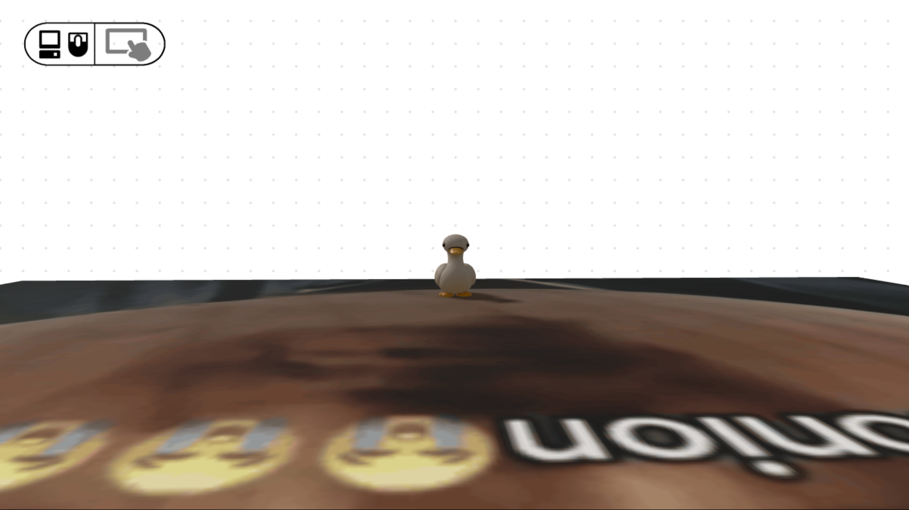

IN My SEP11 class, we were tasked to make a yearlong project about whatever we came up with. Whether it be a website, an app, or a game. With that creatuve freedom, I chose to make a game with gDevelop as my tool. The game is a 3D platformer where you climb up platforms to reach your destination. The game has a few aspects that could shed a giggle or two, and is meant to solve temporary boredom.
There are some things I learned in the journey of making these games, and a few things I would do moving forward. Time management is something that played a huge role In how well made my project came out to be. Unfortunately, time management wasn't my strongest suit and so, the project was rushed. Another key thing I had to improve on was how to make the most out of my tool. The requirement in using the tool I picked was to use text based Javascript instead of block based like the tool advertises, and so It was a complex procedure to figure out how to implement features with its library.
I plan to continue trying to test out the waters in improving making small games, and learn to improve in time management and utilizing my tool fully.

Link to the project